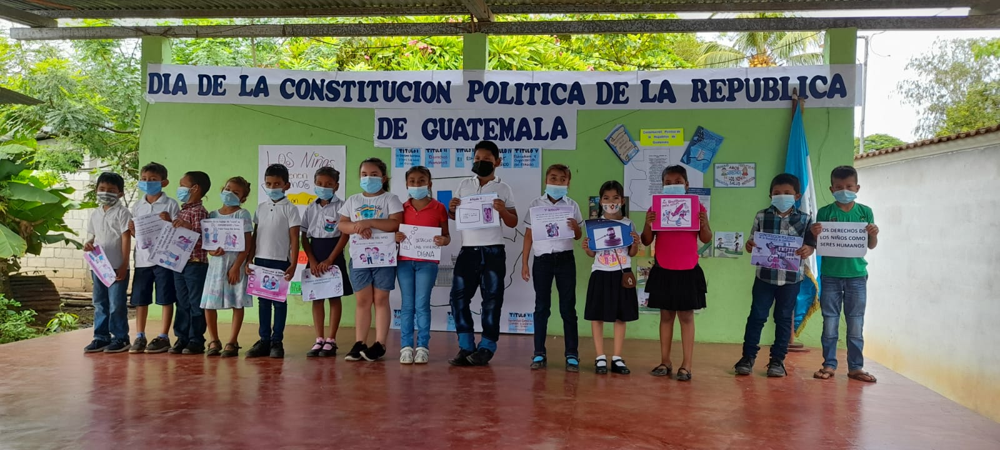

.png)
EDUCACION EN GUATEMALA
Basándonos en alguna información del Ministerio de Educación de Guatemala, existen problemas graves que se deben solucionar, para algunos criterios, es que no hay seguimiento a las propuestas y mejoras en la educación de algún Gobierno que las realice, por lo cual en el país cada cuatro años retrocedemos lo poco que hayamos avanzado.
Por tal razón nos enfocaremos en los principales problemas que existen en la actualidad en la educación en Guatemala:
POBREZA
Guatemala ha tenido históricamente un nivel muy bajo en el campo de la educación. El nivel de escolaridad en Guatemala es sumamente bajo, el Instituto Nacional de Estadística (INE) estima que el promedio es de solo 2.3 años. Incluso menor en los departamentos mayoritariamente indígenas (1.3 años).
Las oportunidades de acceso y permanencia en el sistema educativo no se hayan al alcance de la mayoría de la población guatemalteca. Desigualdades económicas y la falta de oportunidades de un trabajo digno viene a dificultar la oportunidad de estudiar a miles de niños en edad escolar.
CALIDAD DE LA EDUCACION
Los mayas también sufren de bajos niveles de alfabetismo. Según el Banco Mundial, las tasas de analfabetismo en la región llegan a un 75%. Sólo cuatro años en promedio. Las mujeres indígenas típica mente completan menos de dos años de estudios. Los expertos estiman que por cada diez alumnos inician primer grado primaria en zonas rurales de Guatemala, menos de tres continuarán hasta primer curso y sólo uno completará tercer curso.
Para los afortunados que se quedan en la escuela. Los maestros carecen de la preparación adecuada, además de los recursos que necesitan para estimular el aprendizaje, como libros de texto y tecnología. Muchos jóvenes en las comunidades rurales no desarrollan habilidades de estudio apropiadas.
EL ANALFABETISMO COMO PROBLEMA NACIONAL
El origen del analfabetismo en Guatemala lo encontramos en el largo periodo colonial, la escuela fue privilegio de pocas personas (las mas cercanas a los conquistadores) siendo la mayoría explotada en el trabajo únicamente. Posteriormente su crecimiento obedeció en gran parte al desinterés que algunos gobiernos mostraron, particularmente gobiernos dictadores de principios de siglo, a quienes por razones obvias «no convenía» emprender acciones efectivas para combatir un mal que hemos arrastrado a lo largo de muchos años.
- Según información recabada presento algunos datos estadísticos relacionados con este problema:
-
- 75%: Es el porcentaje de analfabetismo en muchas de las áreas rurales de Guatemala.
-
- Dos Tercios: Es la proporción de niños guatemaltecos que viven en la pobreza.
-
- US$4 al día: Es el ingreso diario promedio de una familia guatemalteca en áreas rurales.
-
- Uno de cada diez: Es la proporción de guatemaltecos en áreas rurales que atienden los institutos de ciclo básico.
-
- Uno de cada diez: Es la proporción de guatemaltecos en áreas rurales que atienden los institutos de ciclo básico.
-
- 79%: Es el porcentaje de estudiantes de básico y ciclo diversificado de colegio que carece no tenían la oportunidad de aprender a usar una computadora antes de la llegada de nuestro programa.
Photos


Correo Electronico
correo@electronico.comNumero de Telefono
(502) 0000-0000Direccion
Algun Lugar DeseadoQuetzaltenango
Guatemala